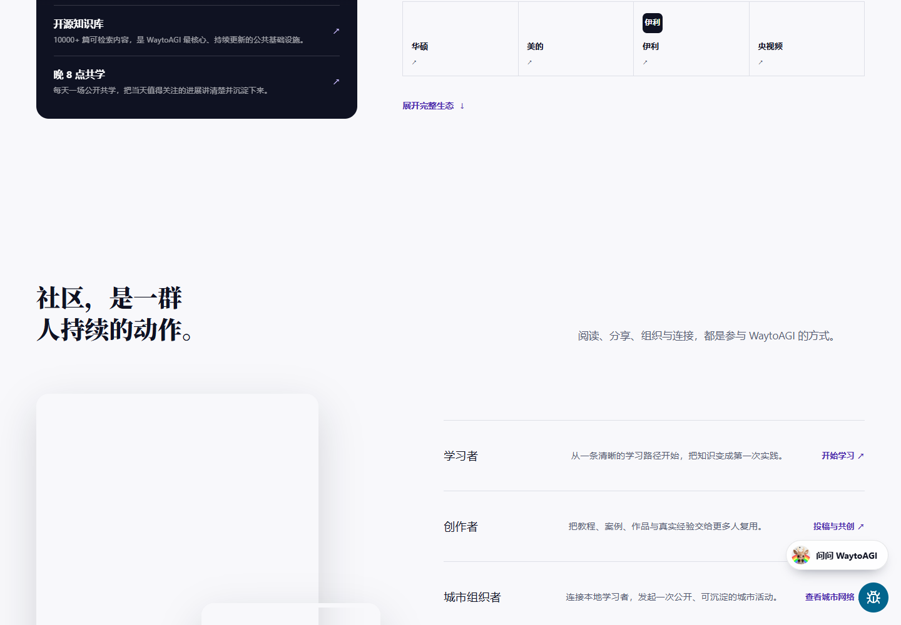

P25-waytoagi-o1 · 官方目标人群
旧轮完整About记录：知识库不设付费墙，部分深度训练、认证和企业服务收费。
未标发布日期；统计截至 2026-07 · 观察：2026-09-09
读取既有证据，未刷新原站；免费入口不能证明成果。
WaytoAGI 提供学习资料、同伴交流与共创活动。公开自述支持学习和建立联系的作用，普通成员能否持续完成项目或经营业务仍缺跟踪。品牌增长服务属于另一类采购关系，共学参与者的职业和创业状态不能据此确定。
| 内容使用者 | 内容供给者 | 付款方 |
|---|---|---|
| 取用知识、参加共学和项目活动的人；职业、年龄及成员份额未知。 | 把尝试写成教程的成员、活动分享者和地方组织者，可能同时是学习者。 | 收费训练和企业服务的官方目标买方；没有独立付款、续费或合同证据。 |
知识库与共创活动；1个明确活动参与者自述，另2份参赛摘要仅作线索。 · 有用户线索，候选画像
| 观察点 | 群体占比 |
|---|---|
| 1个可区分用户点 | 未知 |
| 问题 | 具体材料 |
|---|---|
| 任务 | 选择一个小任务，在同伴或教程支持下开始动手，并判断是否继续投入。 |
| 触发 | 接触新工具但没有起点，或希望改变工作方向。 |
| 希望取得的结果 | 完成能解释和展示的练习，知道下一步应补什么。 |
| 困难 | 资料很多但难选起点。；兴趣学习与工作时间冲突；参赛时间压力目前仅有摘要线索。 |
| 需要的内容 | 前置条件、最小步骤、样例和失败后的替代办法，而不只是工具介绍。 |
| 替代方法 | 自行搜索、工具官方教程或其他共学活动；没有迁移比例。 |
| 持续使用记录 | 匿名A回顾2024年参加活动并由此接触社区；不能把后来职业转型的全部成效归因于社区。 |
| 回访假设 | 进入下一次实践后，因新问题与同伴关系回来。 |
| 付费记录 | 未知；活动参与不是购买社区服务。 |
两个不同署名的公开自述；一人为内容分享者，一人为地方活动组织者，不能合并职业画像。 · 有用户线索，候选画像
| 观察点 | 群体占比 |
|---|---|
| 2个可区分用户点 | 未知 |
| 问题 | 具体材料 |
|---|---|
| 任务 | 分享已有实践，并在活动中找到可交流或合作的人。 |
| 触发 | 有文章、作品或活动要让合适的人看见，需要面对面反馈。 |
| 希望取得的结果 | 建立具体联系，为下一次内容或活动准备合作资源。 |
| 困难 | 仅看资料不能替代对自己问题的讨论。；一次建立联系距离共同完成项目仍有交接成本。 |
| 需要的内容 | 有真实案例与经验的分享、专题讨论和能继续合作的活动材料。 |
| 替代方法 | 独立发文、朋友介绍或参加其他行业活动；替代效果未比较。 |
| 持续使用记录 | 匿名B称在东京活动被读者认出、交流更容易；匿名C称与WaytoAGI等社区建立联系并计划合作，后续执行未核。 |
| 回访假设 | 被识别、获得反馈和组织下一场活动会带来继续参与。 |
| 付费记录 | 作者收入、组织报酬和活动购买均未知。 |
WaytoGrowth关联服务页，官方目标买方；0个独立买方观察。 · 官方目标人群，候选画像
| 观察点 | 群体占比 |
|---|---|
| 0个可区分用户点 | 未知 |
| 问题 | 具体材料 |
|---|---|
| 任务 | 解释产品定位，将内容和发布活动触达潜在使用者。 |
| 触发 | 准备进入新市场或需要稳定获客。 |
| 希望取得的结果 | 获得可交付的定位、内容和渠道执行。 |
| 困难 | 产品能力难被目标人群理解。；曝光与有效线索之间仍需验证。 |
| 需要的内容 | 目标市场研究、可复用案例、渠道内容和交付验收。 |
| 替代方法 | 自建增长团队或采购营销服务；为分析假设。 |
| 持续使用记录 | 资料不足；只有服务目录和组织自述。 |
| 回访假设 | 若持续有可验证线索才可能续约。 |
| 付费记录 | 官方提供收费服务；买方实际付款、金额及续约未知。 |
| 产品提供 | 内容形态 | 如何发挥作用 | 观察结果 | 剩余工作 |
|---|---|---|---|---|
| 知识条目、提示词和共创活动资料。 | 可读教程、可编辑提示词、外部工具入口。 | 先给用途判断，再让使用者取用资料并进入工具实践。 | 已确认资料交付与活动参与自述；知识入口不是站内完成任务。 | 原工具权限、生成成本、结果验收和继续使用仍由参与者承担。 |
找到方法/开始尝试
| 产品提供 | 内容形态 | 如何发挥作用 | 观察结果 | 剩余工作 |
|---|---|---|---|---|
| 共创、线下活动和公开分享场合。 | 活动分享、原始笔记和整理手册。 | 把已有作品作为交流起点。 | 两个自述分别报告破冰和建立社群联系；没有合作交付或持续收入证明。 | 认识人之后是否合作、交付、续办未知。 |
用户自述建立联系
| 产品提供 | 内容形态 | 如何发挥作用 | 观察结果 | 剩余工作 |
|---|---|---|---|---|
| WaytoGrowth的定位、内容与渠道服务。 | 商业服务目录及项目交付。 | 由关联团队承接具体增长工作。 | 只确认供应方服务承诺。 | 有效线索、成交、成本及品牌间收入归属资料不足。 |
官方能力/目标
旧轮完整About记录：知识库不设付费墙，部分深度训练、认证和企业服务收费。
未标发布日期；统计截至 2026-07 · 观察：2026-09-09
读取既有证据，未刷新原站；免费入口不能证明成果。
大理共创档案留有实践笔记与手册，议题包含产品上线、支付与获客。
5月24—30日活动，年份待核；未标发布日期 · 观察：2026-09-09
组织方选择性档案；名片和手册不是独立成功人数。
关联团队WaytoGrowth承接定位、搜索内容与创作者分发等服务。
未标注（页面版权 2026） · 观察：2026-09-09
供应方自述，无合同与买方证据。
匿名A回顾参加2024年深圳AI活动并接触WaytoAGI，后续叙述职业变化。
2026-04-08 · 观察：2026-09-10
只采活动接触自述，不转存身份细节，不将职业变化全部归因于社区。
匿名B称参加WaytoAGI东京活动时被文章和视频读者识别，使交流更容易。
2025-06-15 · 观察：2026-09-10
作者兼内容供给者；没有活动带来商业成交的证据。
匿名C以地方社群组织者身份回顾2050活动，称与WaytoAGI等建立联系并计划后续合作。
2026-04-26 · 观察：2026-09-10
2050是多社群活动；只能归于建立联系，后续合作为计划。
参赛心得摘要提到提示词学习、认识同伴及时间压力。
发布日期未标 · 观察：2026-09-10
原页Internal Error；只有搜索摘要，作者独立性未核，不计用户点。
另一参赛心得摘要说明参与Agent共学与多轮成绩。
发布日期未标 · 观察：2026-09-10
原页Internal Error；只有搜索摘要，不确认实际复现或持续使用，不计用户点。
WaytoAGI · 未标发布日期；统计截至 2026-07 · 查阅：2026-09-09
依据2026-09-09的页面记录，未重新操作；免费入口不代表学习或项目完成。
WaytoAGI · 5月24—30日活动，年份待核；未标发布日期 · 查阅：2026-09-09
读取既有研究证据；原访问2026-09-09，未重新操作。组织方选择性档案；名片和手册不是独立成功人数。
WaytoGrowth · 未标注（页面版权 2026） · 查阅：2026-09-09
读取既有研究证据；原访问2026-09-09，未重新操作。供应方自述，无合同与买方证据。
公开文章或讨论参与者（匿名） · 2026-04-08 · 查阅：2026-09-10
2026-09-10实际访问层级：正文已读。只采活动接触自述，不转存身份细节，不将职业变化全部归因于社区。
公开文章或讨论参与者（匿名） · 2025-06-15 · 查阅：2026-09-11
readable
公开文章或讨论参与者（匿名） · 2026-04-26 · 查阅：2026-09-10
2026-09-10实际访问层级：正文已读。2050是多社群活动；只能归于建立联系，后续合作为计划。
公开文章或讨论参与者（匿名） · 发布日期未标 · 查阅：2026-09-10
2026-09-10实际访问层级：仅搜索摘录; 原页读取失败。原页Internal Error；只有搜索摘要，作者独立性未核，不计用户点。
公开文章或讨论参与者（匿名） · 发布日期未标 · 查阅：2026-09-10
2026-09-10实际访问层级：仅搜索摘录; 原页读取失败。原页Internal Error；只有搜索摘要，不确认实际复现或持续使用，不计用户点。
WaytoAGI的实践记录保留探索过程，课程材料安排学习顺序，活动档案提供背景。现场照片、工具链接和操作手册提供的材料不同，需要分别评价。
围绕一次工具尝试或问题处理形成的说明。
| 样例 | 可以取得什么 | 后续动作 | 条件与限制 |
|---|---|---|---|
| 访谈讲述成员围绕同一机器人应用继续尝试、补写笔记。 | 过程教学；具体笔记的完整字段未逐篇核验。 | 读者可照着思路尝试并补充，依据历史访谈，非实测。 | 访谈不能证明每篇都有输入、参数和失败处理。 |
按主题组织的知识入口及学习内容。
| 样例 | 可以取得什么 | 后续动作 | 条件与限制 |
|---|---|---|---|
| 核验的 About 页对开放知识内容的说明。 | 导航与学习材料；不等于可直接导入的工作流。 | 按需要进入学习主题；未重新打开具体课程目录。 | 复用旧证据，当前每项内容的结构与维护状态资料不足。 |
一场活动的背景、过程资料和整理后的使用说明。
| 样例 | 可以取得什么 | 后续动作 | 条件与限制 |
|---|---|---|---|
| 大理 Hacker House 公开归档。 | 活动记录与过程教学并存，展示材料不等同项目交付。 | 可选相关手册继续查阅；没有实际执行手册或复用项目。 | 入口介绍了整理方法，未逐份检查手册中的代码、权限和测试记录。 |
只拆解公开归档入口；页面写 5 月 24—30 日，未独立确认年份，不代表所有线下活动。
| 材料部分 | 观察到什么 | 作用分析 |
|---|---|---|
| 活动背景 | 归档保留招募文案和正式日程入口。 | 分析：帮助读者区分最初计划与后来形成的成果。 |
| 原始过程 | 页面说明保留原始笔记中的决策、工具链接与选择过程。 | 分析：使最终结论有上下文，便于判断自己的条件是否相同。 |
| 再整理材料 | 手册覆盖选题、原型、部署支付、增长、演示等主题，强调步骤和检查事项。 | 分析：把活动参与者的经历改成外部读者可以按问题查找的材料。 |
| 活动展示 | 页面保留 Demo 与影像记录相关入口。 | 分析：说明发生过什么，但不能单独证明项目已可长期运行。 |
单个归档不能证明所有活动都能产出成熟手册，也不能把公开成员卡片数当实际参与或成功人数。
| 可取得或继承 | 还需准备 | 不能直接迁移 |
|---|---|---|
| 能拿走的是选题线索、实践描述和手册中的操作思路；归档还保留相关原始材料入口。 | 需要自己的任务和素材，重新确认工具版本、权限、成本与材料许可；这些条件未逐项核验。 | 现场答疑、共同工作环境和参与者隐性经验无法随文档复制。是否提供完整工程包或可复制画布，资料不足。 |
WaytoAGI的公开访谈显示，实践者提供经验，编辑负责试用、筛选和整理，再以共学支持初学者。持续供给依靠实践者与编辑合作，工作包括补充步骤、处理学习障碍和活动后归档。
创始人访谈回顾了群内分享、编辑阅读试用、整理进知识库的过程。
| 执行与分工 | 触发与节奏 | 运营作用（分析） | 失效条件 |
|---|---|---|---|
| 实践者提供经历；编辑承担筛选与改写。属于访谈自述。 | 发现值得整理的实践后处理；没有核到稳定产能。 | 分析：供稿和成稿是两项工作，需要分别安排。 | 如果编辑不能判断案例是否有用，材料增加仍可能降低查找效率。 |
About 正文将开放知识内容与进阶训练、企业服务分别介绍。
| 执行与分工 | 触发与节奏 | 运营作用（分析） | 失效条件 |
|---|---|---|---|
| 资料组织与培训交付属于不同工作，具体团队配置未披露。 | 知识入口持续开放；各项进阶服务以当期安排为准。 | 分析：先提供可检查的材料，再让需要更多帮助的人选择服务。 | 公开入口不能证明免费使用者最终付费。 |
访谈把早期共学的出现与新手涌入、基础材料、作业和讲解联系起来。
| 执行与分工 | 触发与节奏 | 运营作用（分析） | 失效条件 |
|---|---|---|---|
| 组织者排学习内容，讲解者答疑，学习者动手提交。 | 这是早期活动起因，不能当作每期固定流程。 | 分析：第一次行动需要任务和反馈，资料目录本身不足以承担带学。 | 初学者的问题可能集中出现，需要懂内容的人响应。 |
大理 Hacker House 归档把招募、日程、原始笔记和整理后的手册放在同一入口。
| 执行与分工 | 触发与节奏 | 运营作用（分析） | 失效条件 |
|---|---|---|---|
| 参与者留下过程材料；归档者把记录改造成可再次查阅的文档。 | 页面呈现活动前、中、后的材料；下一期以官方公告为准。 | 分析：再次访问可由当前项目问题触发，未必依赖参加下一场活动。 | 是否有人按手册再次完成项目未披露。 |
创始人访谈的历史回顾，非旁观活动。
分析：需要具备内容判断力的编辑，也需要能解释问题的实践者，不能全部交给排期人员。
未核编辑工时、材料入选比例或共学完成率。
| 供给者回报 | 参与者回报 | 与付费的连接 |
|---|---|---|
| 访谈可见实践交流与被整理传播的机会，未见普遍适用的稿酬承诺。 | 共学提供可开始的任务；线下活动提供共同推进项目的环境。 | 确认进阶训练和企业服务入口，但没有收入或转化证据。 |
| 持续工作 | 尚未量化的成本 | 成立条件 |
|---|---|---|
| 挑选材料、确认可操作性、整理说明、处理学习障碍、活动后归档。 | 分析：作者随手分享的经验，要成为外人能用的教程，仍需编辑追问条件和补充步骤。 | 稳定实践者、能读懂案例的编辑，以及可回访的资料入口。 |
WaytoAGI以知识库、共学和作者活动吸引参与，另有训练、企业服务、关联品牌增长服务及同品牌API入口。各业务的经营主体和收入归属尚未全部核实。
| 付款方 | 收入方式 |
|---|---|
| 学习者、企业客户、品牌服务客户，以及同品牌API使用者可能分别付款。API计费文档已确认，实际交易与关联业务收入归属未核。 | 免费知识内容与深度训练营、认证、企业服务、关联品牌服务并存；llm.waytoagi.com另提供充值与按模型Token/倍率扣费。各业务收入分项及主要收入来源未确认。 |
同域API文档明确充值、模型及分组倍率扣费，并指导外部客户端使用。这支持“知识社区＋关联调用服务”的产品结构判断；没有证据证明它是整个社区的主要收入，也未证明教程到API的自动交接和实际付费转化。
官方About的FAQ明确知识库免费、无付费墙，深度训练营、认证和企业服务收费。教程和工具目录继续提供低门槛入口。判断：免费阅读与付费学习、服务交付可以并存，但尚未取得各项目的实际价格、成交合同和收入，不能据此计算转化率。
事实：WaytoGrowth 官网自述源自 WaytoAGI，服务包括定位、SEO/GEO、内容、广告测试、创作者分发和全球发布，并提供项目咨询入口。判断：购买者可能是需要开发者或创作者触达的 AI 公司，交付物是增长工作，而非阅读知识库的权限。尚无公开价目或经核实的合同金额，不能计算其服务收入。
事实：大理 Hacker House 页面记录共同做产品、演示和复盘，列出场地、社区、资源支持伙伴，并接受后续活动合作和赞助咨询。判断：这种支持能降低办活动的现金支出，但场地、导师时间、曝光互换和现金赞助性质不同，不宜合并成一笔可持续收入。
判断：从案例记录看，作者与组织者可以获得项目反馈、作品展示和同业关系，品牌也能接触实际使用者。这个价值交换成立的前提是活动有具体任务和可展示产出。多元拾光当前没有成熟案例，直接复制大型共创活动会把组织工作和制作工作同时压在少数人身上。
官方About确认知识库免费，部分训练、认证、企业服务收费；WaytoGrowth自述源自WaytoAGI；API索引记录充值、对公合同和发票安排。所读页面没有给出三个服务的法人名称、合同相对方或收入划分。 API经营/收款主体与社区是否相同未知；不能将同品牌API收入计为社区收入或主要收入。
| 指标 | 披露值 | 期间与对象 | 解释 | 限制 |
|---|---|---|---|---|
| 单场活动的公开成员档案 | 100 张公开名片 | 5月24—30日活动，年份待核；2026-09-09读取；大理 Hacker House 第一期 | 可以证实其曾组织有明确角色和项目的线下共创群体。 | 页面依据报名、签到和自我介绍整理名片；不是全站用户数，也不是活跃作者或付费人数。 |
| 社区月活、付费客户与年度收入 | 未公开核实 | 截至 2026-09-09；WaytoAGI 社区及关联服务团队分别统计 | 尚不足以衡量经营规模或计算每用户收入。 | 已取得About官方触达自述，但学习者和访问次数没有明确去重与活跃定义，学校数同页存在不一致；仍不能替代社区月活、付费人数或年度收入。 |
WaytoAGI · 动态页面，读取时含 2026-09-07 精选 · 查阅：2026-09-09
只用于产品和内容入口，不将工具推荐词作为市场事实。
WaytoGrowth · 未标注（页面版权 2026） · 查阅：2026-09-09
自述源自 WaytoAGI；服务存在不等于收入已验证。
WaytoAGI · 5月24—30日活动，年份待核；未标发布日期 · 查阅：2026-09-09
100 张名片是单场活动资料口径；未导出个人联系方式。
WaytoAGI · 未标发布日期；统计截至 2026-07 · 查阅：2026-09-09
免费/收费边界、学习者和访问量自述、高校数冲突。已读取完整 FAQ；官方页面不是独立统计审计。
WayToAGI API · 未标绝对更新日 · 查阅：2026-09-09
全文可读，确认计费、充值和外部客户端接入；未实测调用或支付，经营主体与社区收入归属未核。
WaytoAGI · 未标发布日期 · 查阅：2026-09-11
readable 开放知识库、共学角色、免费与收费服务边界；页面没有明确服务法人。
WaytoAGI · 未标发布日期 · 查阅：2026-09-11
search-index-readable; direct-open-timeout 本次搜索索引可读充值、合同/发票与客户端说明；两次直接打开超时，未核实际支付或经营主体。
WaytoAGI · 未标发布日期 · 查阅：2026-09-11
search-index-readable; direct-open-timeout 索引自述源自WaytoAGI，提供增长服务；未见法人及收入分项。
WaytoAGI · 未标发布日期 · 查阅：2026-09-11
timeout 未取得正文，不能确认服务法人和社区归属。
About、公开组织材料、历史共创与访谈可读。取得参与角色页面；未投稿、报名、联系作者或验证付费服务。

公开介绍区分学习者、内容贡献与组织工作。
属于组织自述，不能据图中规模信息推算活跃或留存。
来源页面 ↗| 阶段 | 用户动作 | 可能遇到的障碍 |
|---|---|---|
| 发现与进入 | 由资料、作者分享或活动进入一个主题。 | 熟人关系和持续编辑帮助建立信任，陌生用户未必愿意直接进群。 |
| 第一次做成 | 按教程完成一份作业，并把具体卡点带回讨论。 | 课程主题可能只是兴趣；要观察是否用到了自己的素材。 |
| 再次使用 | 参加下一次实践，或回来解决前一次没做完的问题。 | 定期活动带来的回访，未必延续到活动之外。 |
| 贡献给别人 | 把试过的方法整理成教程，或承担组织、答疑与纠错。 | 整理需要人跟进，群聊里的经验不会自动进入知识库。 |
知识库负责按主题找到资料，活动入口负责报名和参与，作者或组织者入口负责继续贡献。把这些入口区分开，比让所有人都从一条资讯流里找下一步更容易解释。
目前取得的是公开介绍和活动材料。知识库实际搜索能否找到某个失败问题、投稿以后多久得到回应，仍要通过真实问题走查。
创始人 AJ 在访谈中回溯，先从个人资料整理、朋友圈分享和朋友入群开始，读者随后主动提供内容。她将实践记录筛选、尝试并整理成文档再分发。
这是一条有原始口述支持的起步路径：现有关系和编辑能力先发挥作用。它不能证明多元拾光从陌生流量开始也有同样成本，访谈中的部分技术口误也不用于事实判断。
访谈描述飞书直播带来大量不知道如何入门的新手后，组织者补充基础资料、安排作业与讲解，形成共学。机器人专题也保存不同作者接续改进的教程、统一跟学入口和安装问题汇总。
内容供给由一次分享变为连续迭代：实践者试过，编辑者整理，后来者照做并补充经验。这个过程需要答疑、筛选与归档，不是自动发生的内容增长。
2025 年百炼合作共学公告提供入门资源，并把部分奖励绑定到完成作业；优秀标准涉及调用顺畅、输出稳定和其他人可复用。活动已经截止，资源承诺不能视为当前通用权益。
历史“谁是人类”活动有前置 Bot 搭建、迭代比赛与测试投票；2026 成都活动的协办记录也呈现工作流和智能体展示。这些证明实践组织方式存在，不证明参加者离开奖励后仍持续活跃。
当前介绍页将学习者、创作者、城市组织者和合作方区分，并区分免费知识与部分收费服务。它提供了组织的自我描述，未披露可审计的常态活跃或收入。
创始人也坦言当时知识整理上传仍集中依赖自己，共创曾出现归属、商业化与贡献认定分歧。对多元拾光，志愿分享可以补充供给，但不能当作能稳定排期的采购预算。
知识库负责长期可找，共学负责把人带到真实行动，问题汇总负责降低下一位使用者的失败成本。多元拾光可以先用固定案例目录和一次小共创检验这些关系，不必立即开发复杂学习系统。
允许有限试用资源，但要求参与者带自己的输入、提交结果和失败记录；付费购买案例与答疑时间，把运营编辑工时一起记录。这样才能判断内容供应是否可持续。
重新打开 About 页，已能读取知识库、学习者、创作者、城市组织者和合作入口。页面把教程、案例、作品和实践经验列为可参与内容；它描述的是不同角色的参与方式，不能据此假定每一类贡献都有稳定报酬。
历史 AI 春晚记录保留了创作者对制作过程的描述：有人兼做生成、声音、剪辑，多数工作在本职工作之外完成。这说明共创作品可以被组织出来，也提醒运营核算隐性工时。该活动属于 2024 年历史，不能据此推算今天的成本。
| 做法 | 依据 | 投入 | 调整条件 |
|---|---|---|---|
| 合作作者提供示范与说明，运营编排相关资料和有限交流，用户可阅读、提问或自主尝试。 | 主题编选和回应能服务没有即时生产任务的人；内容是否值得继续看，需要实际回访。 | 作者演示与答疑、运营编排提醒与整理、产品质量检查分别记工时。 | 用户下一周继续阅读、回看资料或交流，并且组织工作在预算内时，再扩大频次。 |
| 做法 | 依据 | 投入 | 调整条件 |
|---|---|---|---|
| 保留一份任务目录和一个讨论入口，不同时开多门共学。 | 目录越广，需要核查和更新的旧内容越多；城市活动又增加线下协调。当前没有相应负责人。 | 付出的机会成本是暂时覆盖不了泛学习人群；换来运营能把一类用户的问题整理完整。 | 只有同一主题持续有人接手带新成员，而且组织工作可以移交，才考虑扩展第二个主题。 |
官方 · 正文含 2026-07 信息；未标更新时间
当前角色、免费与收费；索引可读，直读受限
创始人访谈 · 未标发布日期；回溯早期发展
种子关系、编辑劳动、共学与归属分歧
官方 · 历史活动档案；未标更新日
接续教程和问题归档；访问不稳定
官方 · 活动已结束，已有最终结果
搭建、迭代与投票；索引读取
合作活动公告 · 2025-01-07；作业截止 01-17
作业和奖励绑定；发布账户企业认证未独立核验
官方协办方 · 发布 2026-02-28；活动 02-08
协办方现场记录，后续扶持属计划
官方 · 未标更新时间；访问 2026-09-09
正文和浏览器均可读；规模为官方自述
官方 · 2024-01-30；历史活动
创作者描述制作与兼任工作；不推算当前成本
可确认开放知识库、组织式共学和关联商业服务并存；两名公开作者提供不同角色的任务线索。API文档提供收费与接入说明，但本次未取得API、增长团队与社区同一经营或收款主体的证明；不能据品牌与子域名合并收入。
官方面向中文AI学习者、创作者与企业实践者；实际样本包括参加活动后开展项目的学习者，以及利用既有文章在活动中建立联系的作者。后者有内容生产经验，不应当作零基础普通学员。
知识库提供学习路径和可追溯来源；活动连接现场交流、作品与共创。API接入文档是单独工具材料，不证明知识库内容能直接生成结果。
官方列明核心成员整理、成员投稿、志愿者与城市组织者；作者自述公开内容降低活动破冰成本。持续组织机制可解释，工时与投稿续供仍缺实证。
官方About确认知识库免费，部分训练、认证、企业服务收费；WaytoGrowth自述源自WaytoAGI；API索引记录充值、对公合同和发票安排。所读页面没有给出三个服务的法人名称、合同相对方或收入划分。
参加过社区活动的作者自述后续采用项目驱动学习，仍需自行部署与接触外部社区。API Gemini CLI指南单列工具调用兼容问题，限制当时推荐使用范围；这属于文档告知，不是用户失败率。
可见替代包括项目驱动自学、工具原始资料、Home Assistant等专项社区，以及独立发文后建立联系。社区的可能增量在选择顺序和人与人反馈，而非垄断工具入口。
任务：从泛AI兴趣进入可展示的个人项目。
困难：自述经历资料过载和学习缺乏目标；后续工程工作仍需本人完成。
结果：原作者报告项目实践与职业转向，支持活动启发和自学过程存在；不是社区导致职业成功的因果证明。
尚缺：未独立检查项目工程、实际采用、收入及社区持续参与；文章中的个人生活细节未转录。
任务：通过学习输出与线下活动找到能继续交流的人。
困难：资料消费之外仍需表达与针对具体项目的反馈。
结果：可确认作者自述既有作品帮助破冰；具体合作与业务机会兑现未核验。
尚缺：内容是否主要在WaytoAGI发表、后续合作结果、活动报酬与再次参会未知。
决定能否将其作为同一业务的商业参照。
公开服务协议中的公司名、对公合同主体、备案主体及团队明确说明；仅有品牌和子域名不够。
活动启发与专业作者体验不能代表内容有效性。
同一任务的输入、完成物、遇阻、本人确认及后续使用记录。
readable
开放知识库、共学角色、免费与收费服务边界；页面没有明确服务法人。
search-index-readable; direct-open-timeout
本次搜索索引可读充值、合同/发票与客户端说明；两次直接打开超时，未核实际支付或经营主体。
search-index-readable; direct-open-timeout
索引自述源自WaytoAGI，提供增长服务；未见法人及收入分项。
readable
活动参与、自学受阻、项目学习和跨工具实践；回顾性自述未独立验证。
readable
作者自述东京活动与既有读者交流；已补绝对发布日期。
readable; search-crawl-two-months-old
指南记录工具调用兼容报错和适用范围提示；时间较旧，不作为当前完整调用验收。
timeout
未取得正文，不能确认服务法人和社区归属。
同品牌API是否与社区同一收入主体？：About FAQ；API文档、About入口；WaytoGrowth；site:llm.waytoagi.com 公司 协议 运营；确认产品关联与收费文档；未找到可用的同一法人/收款归属证明。
有没有普通使用与反例？：两篇原作者文章；参赛心得原页；Gemini CLI指南；两篇作者原文可读，参赛心得超时；得到自学困难和工具指南限制，不估任务成功率。